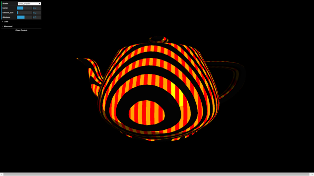

A modern programmer with varied, deep expertise

Professional experience with a wide range of languages, libraries and frameworks, and a drive to learn more of each.
In the past I taught intro courses and have worked with Medical Software, Games and SAAS companies of all different shapes and sizes.
A passion for programming, and a desire to share that passion with others.
Whether teaching high-school students or helping colleages, I find my passion for programming is always growing.
Solving complex problems brings me great joy.
Focused on delivering high quality code and design.
I'm always looking to make the best software I can, and to keep my skills up to date with the latest standards.
PullString Inc. is a San Francisco startup that started by bringing conversational entertainment to kids under the name ToyTalk.
Then we changed focus to provide the tools necessary for others to build similar conversational entertainment through advanced AI-controlled bots.
As the Infrastructure Engineer at PullString, I contributed to a wide range of projects, and supported the team to make building a seamless process.
The first thing I did when I started at PullString was to set up a Bamboo build server to provide a repeatable build environment, and to catch breaking code changes as soon as possible.
I also branched out from the typical infrastructure engineer role and helped to develop the Hello House Companion App for Android, and single-handedly converted our 4-year-old code base to also build & run on Windows.
Enplug Inc. is a Los Angeles startup that provides an app-based digital signage solution.
Enplug has been recognized by Time, Fortune, Marie Claire, Inc., and Money magazines along with many more print and internet publications for being a leader in the field of digital signage.
As a Senior Software Engineer at Enplug, I had a high-expectation job with a wide range of responsibilities.
I enjoyed the fast-paced startup nature because there was never a lack of tasks to focus on.
My primary responsibility was to develop new technologies for the Enplug SDK such as the video renderer and adding browser support.
On top of that, I designed, developed and deployed two apps, maintained a third, ran the build system, worked on the android mobile control app, supported the development of all webpage-based external apps and many more tasks.
Because we had a small engineering team with a high-visibility product that needs to run smoothly 24/7, I had a hand in too many tasks to list.
While 95% of my work was done remotely from Northern California, I was also recognized for my contributions to company life.
I was highlighted in an employee spotlight blog post and mentioned by Nanxi Liu (the CEO) in an article about company culture.
I invited the entire team to my wedding, and half of them (including Nanxi) drove up to San Francisco for the celebration.
I had the opportunity to work with a group of highly skilled, awesome people developing modern C++ applications for intravascular ultrasounds. My primary role was as a developer on the Maestro team (which was the newest platform being developed at Volcano) and as the sole owner of the CMake Macros. I also collaborated with the build team on an automated test system and the company's CMake Macros. In November, a principle software engineer recognized me with a company-wide "Heads Up" award nomination for finding a solution for optimizing the design of our statechart library.
I was chosen by one of my professors to be the head instructor of a collaborative effort between CSU Sacramento and the surrounding school districts to teach game programming to inner city high school students. Under my supervision and assistance, the McClatchy High School students successfully created an educational computer game in Greenfoot, and the game was deployed to local elementary schools in the same district.
I was selected by professors at CSUS to teach a pair of introductory java adjunct courses. Students enrolled in Proramming Concepts and Methodology I and II had the option of signing up for a concurrent course taught by myself. For five semesters, I created dynamic lessons to supplement the professors' lectures, worked one-on-one with students during office hours, and collaborated with faculty to achieve maximum student comprehension. I also worked with Computer Science department faculty to promote diversity and inclusivity within the engineering culture at CSUS.
Primary concentration in artificial intelligence with a secondary concentration in security
Designed graphical representation and AI for 2D Java zombie path-finding project
Developed algorithms and interface for Java steganographic encoder
Taught summer programming course to high school students for masters project
Programmed Java OpenGL 3D Engine
Headed UI and graphics for 3D Candy Collector Game using Java and OpenGL
Project lead on Crime Event Mapping System for Sacramento Homicide Department (as Senior Project) using C# and Bing Maps API
Created Schmesh (chess-like) game playing AI and placed 7 in class competition
Undefeated champion of the acm programming contest for two years
Used Wolfram Mathematica to solve complex physics problems.
Wrote Fortran code to solve parametric equations.
Took advanced courses in simulations, optics and modern physics.
C++11/14
Java
C#
C
JavaScript
Perl
Python
GLSL
CMake
OpenGL
Qt
FFMpeg
OpenCV
Boost C++
AngularJS
NodeJS
LibGDX
Visual Studio
Unity 3D
IntelliJ
Android Studio
Eclipse
Cygwin
Github
Perforce
XCode
Windows
Linux
Android
Mac OSX
Graphics
Game Programming
Artificial Intelligence
Security
This procedurally generated texture on a teapot is done using WebGL after taking an Udacity course on the subject. I've taken many courses on Computer Graphics over the years, and really enjoy being creative with shaders. Specifically, I have experience with GLSL fragment and vertex shaders, but want to find an excuse to use geometry shaders. View the demo in your browser here 
Made using JavaScript, CSS and HTML. This redesign converted from using the JavaScript-heavy Angular 1 Framework to using the CSS-heavy Materialize library.